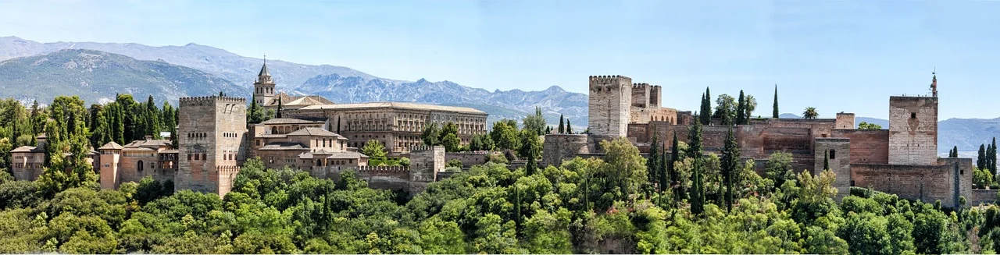

L'Arte dei giardini
Un bisogno fondamentale dell'uomo - così importante come quello di respirare, di nutrirsi o di riprodursi - è quello di esprimersi. Un tale bisogno si è manifestato nel corso dei secoli in modi così diversi che è impossibile elencarli tutti. Tuttavia si possono distinguere due categorie di queste manifestazioni: quelle generate dall'azione e quelle che nascono dallo svago.
"Azione" e "svago" sono due realtà complementarie, entrambe indispensabili per la piena felicità dell'uomo. Il nostro secolo che ha solo le parole "dinamismo" e "espansione" sulle labbra dà valore solo a ciò che risulta dal lavoro, dall'azione, dallo sforzo quotidiani. Però è sbagliato: è proprio perché il mondo odierno ha perduto il senso dello svago fino a non sapere nemmeno in che cosa consiste che offre ai nostri occhi una faccia così smorfiosa.
Lo svago non sono secondo il senso commune le ore della vita in cui "non facciamo nulla". Non ha niente a che fare con l'ozio né la pigrizia. Al contrario è uno stato eminentemente creativo in cui l'individuo, non più occupato da questo o quel compito particolare, recupera le sue forze disperse, riprende coscienza della sua totalità e percepisce più chiaramente la voce delle sue aspirazioni più profonde.
Nella prima Egloga Virgilio rende grazia a Dio per avergli accordato dei momenti di svago - Deus nobis haec otia fecit - senza i quali non avrebbe mai potuto comporre la sua opera poetica. Peraltro le Georgiche e l'Eneide non sono cosa da poco! Hanno molto più peso nella nostra memoria che l'attività sfrenata dei Cesari della decadenza, con i loro intrighi sanguinosi e i loro perpetui colpi di forza. È grazie a queste opere che abbiamo una così alta opinione della civiltà romana.
E ciò che diciamo di Virgilio - perché è stato tra tutti i poeti dell'Antichità quello che ha formulato meglio i benefici dello svago - lo potremmo dire anche di Catullo, di Properzio, di Orazio o di Lucrezio. Senza Otium niente poesia, niente pittura, niente musica. Neanche l'eloquenza. E sopratutto niente giardini. Perché la creazione dei giardini è forse la forma più alta che possa raggiungere il bisogno di espressione dell'uomo quando l'uomo attinge la propria ispirazione dallo stato di svago.
Lo stato di svago, considerato come l'ambito in cui si esercita al meglio il bisogno di espressione dell'uomo; la creazione di giardini, considerata come la manifestazione suprema dello stato di svago, non sono già due pietre angolari che ci dà l'esistenza di questi spazi adornati di alberi e fiori che l'uomo non ha cessato di disseminare in tutto il mondo da quando è apparso sulla terra?
Andando oltre, diremmo che la grande arte dei giardini corrisponde, in certe civiltà, al desiderio di esprimere, non in modo astratto ma attingendo alla natura i suoi propri elementi, la loro più alta concezione della felicità.
Ho detto: "in certe civiltà". Infatti tutte non hanno provato un tale bisogno. In alcune, si è espresso solo in modo debole. In determinati casi, era completamente assente. Perché non bisogna confondere l'amore per i giardini con l'amore per la natura, l'amore per i siti o anche l'amore per i fiori. Sono cose molto diverse che spesso tendono a escludersi a vicenda.
Gli egiziani
Gli egiziani, grandi architetti in assoluto, hanno costruito le piramidi e un numero incredibile di templi. Ma non hanno lasciato molto in termini di giardini. Non ce ne sono che minime tracce nella loro poesia e appena di più negli affreschi delle loro tombe. È solo se, di tanto in tanto, un pezzo d'acqua quadrato necessario alla sopravvivenza dei pesci rossi o dei coccodrilli sacri interrompe la monotona successione di pietre! A cosa dobbiamo attribuire questa mancanza di verde? All'aridità del clima? È perché il grande flusso del Nilo e i verdi campi del Delta hanno assorbito tutte le facoltà creative degli egiziani in questa materia? In ogni caso, la civiltà egiziana, così prestigiosa sotto tanti aspetti, non ci ha lasciato nulla di molto originale in fatto di giardini.
I greci e i romani
I greci e i romani avevano un senso del sito molto sviluppato. Hanno dato prova di genio quando si è trattato di scegliere la posizione delle loro città, dei loro templi, dei loro santuari e delle loro agorà. Basta pensare a Delfi, Eleusi, Dafni, Olimpia o Epidauro, Selinunte, Leptis Magna. Bastava un bosco di ulivi, una tana oscura, un promontorio roccioso che fendeva il Mar Egeo, o le pendici dell'Elicona per evocare la presenza radiosa di Apollo, le convulsioni di una Pizia, o il prato coperto di asfodeli dove le Muse si divertivano. Tuttavia, si cercherebbe invano un'arte di giardini specificamente greca o romana. Il famoso labirinto di Cnosso, a Creta, non esprime la felicità dell'uomo ma piuttosto il suo tormento di fronte alla complessità della vita, e la villa di Adriano a Tibur è solo un ambiente rurale, decorato con statue. Plinio il Vecchio celebrava la bellezza del Giardino delle Esperidi. Ma era, al massimo, solo un boschetto di aranci.
Gli anti-giardini inglesi
Per quanto riguarda i tanto lodati giardini inglesi - a parte quelli di Hampton Court, Badminton, Hartfield, Wilton, Chatsworth e alcuni altri che sono in realtà giardini "alla francese" trasposti in Inghilterra - diciamo subito che sono pseudo, per non dire antigiardini. Ciò che la maggior parte degli inglesi ha cercato di ricreare intorno alle loro case è un'ambientazione cosiddetta "naturale", anche se ciò significa aggiungere di tanto in tanto un tocco di comodità (una panchina sotto un salice piangente), o un tocco di pittoresco (una cascata che mormora tra rocce artificiali), ciò che ne accentua il carattere finto. Non dico che il risultato non sia piacevole all'occhio, né inadatto alle fantasticherie di un passeggiatore solitario. Non c'è dubbio anche che porta una certa soddisfazione alle anime sensibili che cercheranno sempre di presentare il "ritorno alla Natura" come il miglior antidoto ai vizi della società. Ma per la loro stessa essenza - che è il rifiuto di qualsiasi stile che possa elevarli al livello di opere d'arte e il deliberato desiderio di farli "fondere" nel paesaggio - sono agli antipodi della "grande arte dei giardini" con la quale, come abbiamo già detto, "una civiltà cerca non di copiare la natura ma di utilizzare gli elementi che essa fornisce per esprimere la sua più alta concezione della felicità".
Tutte le civiltà non hanno avuto una tale ambizione e sempre mancherà qualcosa a quelle che ne furono sprovviste. Ma sei popoli si sono sforzati di esprimere il proprio genio in questa materia: i cinesi, i giapponesi, i persiani, gli arabi, i toscani e i francesi. Quelli ci sembreranno sempre, se non più civili degli altri, almeno più consapevoli del meglio della loro civiltà.
Jacques Benoist-Méchin Tradotto dal francese all'italiano da Sébastien Lantrade